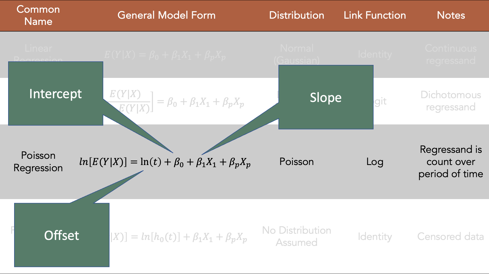

46 Introduction to Regression Analysis
This chapter is under heavy development and may still undergo significant changes.
As a reminder, epidemiology is the study of the occurrence and distribution of health-related states or events in specified populations, including the study of the determinants influencing such states, and the application of this knowledge to control the health problems. In previous chapters, we focused on some of the ways we can measure the occurrence of those states or events. In this part of the book, we are going to add another useful tool to our toolbox for measuring occurrence and association – regression.
“A regression of a variable Y on another variable, say an exposure X, is a function that describes how some feature of the distribution of Y changes across population subgroups defined by values of X.”17
We can write that statement as an equation like this:
\[\begin{equation} E(Y|X = x) \tag{46.1} \end{equation}\]
Where, \(E()\) means “expected value” or “average” of whatever is inside of the parentheses. So, we could articulate this equation in words as, The average value of Y when the variable X has a specific value, x.
For example, we could write a statement like “the average grade in an introduction to epidemiology class is 95” as \(E(Grade) = 95\). Further, we could write a statement like “The average grade in an introduction to epidemiology class is a 98 among people who study 10 hours per week” as \(E(Grade|Hours = 10) = 98\).

I will try to use the terms regressand and regressor in this class – even though they are not the most commonly used terms and probably have no intuitive meaning to the vast majority of you. In fact, I will use them precisely because they don’t have any intuitive meaning to the vast majority of people. The other terms shown above can come loaded with preconceived notions for any people that may or may not be accurate.

There is no preference for causal, or even temporal, relationships.
For example, we intuitively know that our grade does not cause the number of hours we study. It couldn’t possibly. The studying occurs before we ever get a grade. Further, it doesn’t even really make sense to say that our grade predicts the number of hours we will study. Again, the studying occurs before we ever get the grade. In this case, our intuition will help us from making inaccurate statements about the results of regression analysis, but that won’t always be true. Causal and temporal relationships won’t always be so obvious. In those cases, the other terms can sometimes inadvertently invite us to make statements about the relationship between the variables that we can’t really justify.
Here are the regression models we will cover this semester; although, we will not cover them all today. They all fall under the blanket term, “Generalized Linear Models, “ or GLMs for short.
GLMs are made up of three components: 1. Linear predictor of the outcome 2. Transformation of the mean of the response variable (the link function) 3. The assumed distribution of the response variable (from the exponential family)

Today, we will discuss linear, logistic, and Poisson regression. We will cover Cox proportional hazards regression later as part of our broader discussion of survival analysis.

In this lab warm-up, we will review some of the basics of regression analysis, and the R code we need to write to fit regression models to our data. Specifically, we will review three different regression models - linear, logistic, and Poisson.
Linear regression, logistic regression, and Poisson regression are all specific cases of a group of regression models called Generalized Linear Models (GLMs). In R, we fit GLMs with the glm() function. In general, we will need to pass the following the following information to the glm() function:
The formula we pass to the glm() function takes the form Y ~ X, where Y is the outcome variable and X is the predictor variable or variables.
In this module, we will use one of the following distribution family and link functions:
| Regression Model | Distribution Family | Link Function |
|---|---|---|
| Linear | gaussian() | link = “identity” |
| Logistic | binomial() | link = “logit” |
| Poisson | poisson() | link = “log” |
And finally, we will pass the name of a data frame to the data argument of the glm() function.
Although not strictly necessary, we will also use the broom package to to make the results from the glm() function a little easier to work with.
# Load the packages we will need below
library(dplyr, warn.conflicts = FALSE)
library(broom)
library(ggplot2)
library(meantables)
library(freqtables)46.1 Model syntax and interpretation
The introduction to R4Epi says that our philosophy is “to start each concept by showing you the end result and then deconstruct how we arrived at that result, where possible. We find that it is easier for many people to understand new concepts when learning them as a component of a final product.” In that spirit, this section will briefly cover the R syntax we will use to fit linear, logistic, and Poisson regression models. We will also briefly cover interpretation of the results.
Before we can fit any models to our data, we need to have some data. Therefore, we will simulate some very simple data below that we can use for illustrative purposes.
set.seed(123)
n <- 20
df <- tibble(
x_cont = rnorm(n, 10, 1),
x_cat = sample(0:1, n, TRUE, c(.7, .3)),
y_cont = if_else(
x_cat == 0,
x_cont + rnorm(n, 1, 0.1),
x_cont - rnorm(n, 1, 0.1)
),
y_cat = if_else(
x_cat == 0,
sample(0:1, n, TRUE, c(.9, .1)),
sample(0:1, n, TRUE, c(.5, .5))
),
y_count = if_else(
x_cat == 0,
sample(1:5, n, TRUE, c(.1, .2, .3, .2, .2)),
sample(1:5, n, TRUE, c(.3, .3, .2, .1, .1))
)
)
df## # A tibble: 20 × 5
## x_cont x_cat y_cont y_cat y_count
## <dbl> <int> <dbl> <int> <int>
## 1 9.44 0 10.5 0 5
## 2 9.77 0 10.7 0 2
## 3 11.6 0 12.6 0 5
## 4 10.1 0 11.2 0 3
## 5 10.1 0 11.2 0 4
## 6 11.7 0 12.8 0 2
## 7 10.5 0 11.5 0 3
## 8 8.73 0 9.73 0 4
## 9 9.31 0 10.3 0 1
## 10 9.55 1 8.53 1 1
## 11 11.2 0 12.2 0 3
## 12 10.4 0 11.3 0 2
## 13 10.4 1 9.43 0 1
## 14 10.1 0 11.3 0 4
## 15 9.44 0 10.6 0 1
## 16 11.8 0 12.7 0 2
## 17 10.5 0 11.5 0 2
## 18 8.03 1 7.03 0 2
## 19 10.7 1 9.61 0 5
## 20 9.53 0 10.5 0 446.1.1 Linear regression
Now that we have some simulated data, we will fit our models. We will start with linear models.
46.1.1.1 Continuous regressand continuous regressor
glm(
y_cont ~ x_cont, # Formula
family = gaussian(link = "identity"), # Family/distribution/Link function
data = df # Data
)##
## Call: glm(formula = y_cont ~ x_cont, family = gaussian(link = "identity"),
## data = df)
##
## Coefficients:
## (Intercept) x_cont
## -1.430 1.202
##
## Degrees of Freedom: 19 Total (i.e. Null); 18 Residual
## Null Deviance: 38.79
## Residual Deviance: 12.82 AIC: 53.8646.1.1.2 Continuous regressand categorical regressor
glm(
y_cont ~ x_cat, # Formula
family = gaussian(link = "identity"), # Family/distribution/Link function
data = df # Data
)##
## Call: glm(formula = y_cont ~ x_cat, family = gaussian(link = "identity"),
## data = df)
##
## Coefficients:
## (Intercept) x_cat
## 11.287 -2.636
##
## Degrees of Freedom: 19 Total (i.e. Null); 18 Residual
## Null Deviance: 38.79
## Residual Deviance: 16.55 AIC: 58.9846.1.2 Logistic regression
Now, let’s take a look at a couple of logistic models.
46.1.2.1 Categorical regressand continuous regressor
glm(
y_cat ~ x_cont, # Formula
family = binomial(link = "logit"), # Family/distribution/Link function
data = df # Data
)##
## Call: glm(formula = y_cat ~ x_cont, family = binomial(link = "logit"),
## data = df)
##
## Coefficients:
## (Intercept) x_cont
## 3.9377 -0.6977
##
## Degrees of Freedom: 19 Total (i.e. Null); 18 Residual
## Null Deviance: 7.941
## Residual Deviance: 7.535 AIC: 11.5446.1.2.2 Categorical regressand categorical regressor
glm(
y_cat ~ x_cat, # Formula
family = binomial(link = "logit"), # Family/distribution/Link function
data = df # Data
)##
## Call: glm(formula = y_cat ~ x_cat, family = binomial(link = "logit"),
## data = df)
##
## Coefficients:
## (Intercept) x_cat
## -21.57 20.47
##
## Degrees of Freedom: 19 Total (i.e. Null); 18 Residual
## Null Deviance: 7.941
## Residual Deviance: 4.499 AIC: 8.49946.1.3 Poisson regression
Finally, let’s take a look at a couple of Poisson models.
46.1.3.1 Count regressand continuous regressor
glm(
y_count ~ x_cont, # Formula
family = poisson(link = "log"), # Family/distribution/Link function
data = df # Data
)##
## Call: glm(formula = y_count ~ x_cont, family = poisson(link = "log"),
## data = df)
##
## Coefficients:
## (Intercept) x_cont
## 0.44666 0.05734
##
## Degrees of Freedom: 19 Total (i.e. Null); 18 Residual
## Null Deviance: 13.74
## Residual Deviance: 13.57 AIC: 73.7446.1.3.2 Count regressand categorical regressor
glm(
y_count ~ x_cat, # Formula
family = poisson(link = "log"), # Family/distribution/Link function
data = df # Data
)##
## Call: glm(formula = y_count ~ x_cat, family = poisson(link = "log"),
## data = df)
##
## Coefficients:
## (Intercept) x_cat
## 1.0776 -0.2666
##
## Degrees of Freedom: 19 Total (i.e. Null); 18 Residual
## Null Deviance: 13.74
## Residual Deviance: 13.17 AIC: 73.3346.1.3.2.1 Interpretation
Intercept: The natural log of the mean of
y_countwhenx_catis equal to zero.x_cat: The average change in the natural log of the mean of
y_countwhenx_catchanges from zero to one.
In the sections above, we got a glimpse into the syntax we will need to use to perform linear, logistic, and Poisson regression in R. However, the syntax alone is not very useful if we don’t understand what’s happening in a more intuitive way. The the sections that follow, that’s exactly what we will try to develop.
46.2 Family history and diabetes
For this example, we want to regress diabetes (0=Negative, 1=Positive) on Family History (0=No, 1=Yes), to investigate the relationship between diabetes and family history of diabetes in our data.
For dichotomous variables that take the values 0 and 1 only, the mean is equal to the proportion of 1’s. - 1, 1, 1, 0, 0 - Mean = (1 + 1 + 1 + 0 + 0) / 5 = 0.6 - Proportion of 1s = 3/5 = 0.6
diabetes <- tidyr::expand_grid(
family_history = c(1, 0),
diabetes = c(1, 0)
) %>%
mutate(count = c(58, 196, 63, 381)) %>%
tidyr::uncount(count)
diabetes## # A tibble: 698 × 2
## family_history diabetes
## <dbl> <dbl>
## 1 1 1
## 2 1 1
## 3 1 1
## 4 1 1
## 5 1 1
## 6 1 1
## 7 1 1
## 8 1 1
## 9 1 1
## 10 1 1
## # ℹ 688 more rowsRemember, in the frequentist view, the regression of a variable Y on another variable X is the function that describes how the average (mean) value of Y changes across population subgroups defined by values of X.17
The mean value of diabetes across subgroups defined by family history are:
## # A tibble: 2 × 11
## response_var group_var group_cat n mean sd sem lcl ucl min max
## <chr> <chr> <dbl> <int> <dbl> <dbl> <dbl> <dbl> <dbl> <dbl> <dbl>
## 1 diabetes family_history 0 444 0.14 0.35 0.0166 0.11 0.17 0 1
## 2 diabetes family_history 1 254 0.23 0.42 0.0264 0.18 0.28 0 1## # A tibble: 4 × 6
## row_var row_cat col_var col_cat n percent_row
## <chr> <chr> <chr> <chr> <int> <dbl>
## 1 family_history 0 diabetes 0 381 85.8
## 2 family_history 0 diabetes 1 63 14.2
## 3 family_history 1 diabetes 0 196 77.2
## 4 family_history 1 diabetes 1 58 22.8Take a look at the proportion of people with family history of diabetes who have diabetes and the proportion of people without family history of diabetes who have diabetes. You should notice that it is the same as the subgroup means.
This illustrates an important property: “When the regressand Y is a binary indicator (0, 1) variable, E(Y|X=x) is called a binary regression, and this regression simplifies in a very useful manner. Specifically, when Y can be only 0 or 1 the average E(Y|X=x) equals the proportion of population members who have Y=1 among those who have X=x.”
Now, let’s fit a linear regression model to this data.
46.2.1 Linear regression
##
## Call: glm(formula = diabetes ~ family_history, family = gaussian(link = "identity"),
## data = diabetes)
##
## Coefficients:
## (Intercept) family_history
## 0.14189 0.08645
##
## Degrees of Freedom: 697 Total (i.e. Null); 696 Residual
## Null Deviance: 100
## Residual Deviance: 98.82 AIC: 622.3Intercept: The mean value of
diabeteswhenfamily_historyis equal to zero.family_history: The average change in
diabetesfor each one-unit increase infamily_history.
0.14189 + 0.08645
Hopefully, this illustration has given increased your comfort level with regression analysis. It’s just an extension of the simpler methods we previously learned about. However, these same concepts extend to multivariable (not to be confused with multivariate) regression. This is one of the primary reasons we use regression. Imagine how messy the mean tables and/or frequency tables would get if we had 10 regressor variables instead of one.
However, we will not typically use linear regression with binary outcomes as we did above. This was only meant to give you a feel for what regression is doing under the hood. Now, let’s take a look at a more realistic example using a continuous outcome.


The type of model you select will depend heavily on the form of your regressand, Y. - Continuous - Dichotomous - Count - Censored
“In the absence of extensive information regarding the nature of the variables of interest, a frequently employed strategy is to assume initially that they are linearly related. Subsequent analysis, then involves the following steps: 1. Determine whether or not the assumptions underlying a linear relationship are met in the data available. 2. Obtain the equation for the line that best fits the sample data. 3. Evaluate the equation to obtain some idea of the strength of the relationship and the usefulness of the equation for predicting and estimating. 4. If the data appear to conform satisfactorily to the linear model, use the equation obtained for the sample to predict and estimate.
Do you remember learning the slope-intercept form of the equation of a straight line back in Algebra?


46.3 Waist circumference and deep abdominal adipose tissue
“Despres et al. point out that the topography of adipose tissue (AT) is associated with metabolic complications considered as risk factors for cardiovascular disease. It is important, they state, to measure the amount of of intraabdominal AT as part of the evaluation of the cardiovascular-disease risk of an individual. Computed tomography (CT), the only available technique that precisely and reliably measures the amount of deep abdominal AT, however, is costly and requires irradiation of the subject. In addition, the technique is not available to many physicians. Depres and his colleagues conducted a study to develop equations to predict the amount of deep abdominal AT from simple anthropometric measurements. Their subjects were men between the ages of 18 and 42 years who were free from metabolic disease that would require treatment. Among the measurements taken on each subject were deep abdominal AT obtained by CT and waist circumference. A question of interest is how well one can predict and estimate deep abdominal AT from knowledge of waist circumference.”19
set.seed(123)
n <- 100
daat_waist <- tibble(
waist = rnorm(n, 39, 2),
waist_c = waist - 39,
beta1 = rnorm(n, 3.45, 0.2),
daat_bar = rnorm(n, 101, 8),
daat = daat_bar + (beta1 * waist_c)
)
daat_waist## # A tibble: 100 × 5
## waist waist_c beta1 daat_bar daat
## <dbl> <dbl> <dbl> <dbl> <dbl>
## 1 37.9 -1.12 3.31 119. 115.
## 2 38.5 -0.460 3.50 111. 110.
## 3 42.1 3.12 3.40 98.9 109.
## 4 39.1 0.141 3.38 105. 106.
## 5 39.3 0.259 3.26 97.7 98.5
## 6 42.4 3.43 3.44 97.2 109.
## 7 39.9 0.922 3.29 94.7 97.7
## 8 36.5 -2.53 3.12 96.2 88.4
## 9 37.6 -1.37 3.37 114. 110.
## 10 38.1 -0.891 3.63 101. 97.3
## # ℹ 90 more rows46.3.1 Continuous regressor (waist circumference)
What is the average waist circumference?
## [1] 39.18081What is the average deep abdominal adipose tissue?
## [1] 102.5663What is the relationship between deep abdominal adipose tissue and waist circumference?

ggplot(daat_waist, aes(x = waist, y = daat)) +
geom_point() +
geom_hline(yintercept = mean(daat_waist$daat), color = "red") 
##
## Pearson's product-moment correlation
##
## data: daat_waist$daat and daat_waist$waist
## t = 6.8167, df = 98, p-value = 0.0000000007658
## alternative hypothesis: true correlation is not equal to 0
## 95 percent confidence interval:
## 0.4171962 0.6870258
## sample estimates:
## cor
## 0.5671401ggplot(daat_waist, aes(x = waist, y = daat)) +
geom_point() +
geom_smooth(method = "lm", se = FALSE) ## `geom_smooth()` using formula = 'y ~ x'
What is the relationship between deep abdominal adipose tissue (regressand) and waist circumference (regressor)?
##
## Call: glm(formula = daat ~ waist, family = gaussian(link = "identity"),
## data = daat_waist)
##
## Coefficients:
## (Intercept) waist
## -9.580 2.862
##
## Degrees of Freedom: 99 Total (i.e. Null); 98 Residual
## Null Deviance: 8404
## Residual Deviance: 5701 AIC: 694.146.3.1.1 Interpretation
Intercept: The mean value of deep abdominal adipose tissue when waist circumference is 0 is -9.580.
waist: The average change in deep abdominal adipose tissue for each one inch increase in waist circumference is 2.86.
ggplot(daat_waist, aes(x = waist, y = daat)) +
geom_point() +
geom_smooth(method = 'lm', se = FALSE) +
geom_abline(intercept = -9.580, slope = 2.862, color = "red", linetype = "dashed") ## `geom_smooth()` using formula = 'y ~ x'
46.3.2 Categorical regressor (large waist)
daat_waist <- daat_waist %>%
mutate(
large_waist = if_else(waist < mean(waist), 0, 1),
large_waist_f = factor(large_waist, 0:1, c("No", "Yes"))
)
daat_waist## # A tibble: 100 × 7
## waist waist_c beta1 daat_bar daat large_waist large_waist_f
## <dbl> <dbl> <dbl> <dbl> <dbl> <dbl> <fct>
## 1 37.9 -1.12 3.31 119. 115. 0 No
## 2 38.5 -0.460 3.50 111. 110. 0 No
## 3 42.1 3.12 3.40 98.9 109. 1 Yes
## 4 39.1 0.141 3.38 105. 106. 0 No
## 5 39.3 0.259 3.26 97.7 98.5 1 Yes
## 6 42.4 3.43 3.44 97.2 109. 1 Yes
## 7 39.9 0.922 3.29 94.7 97.7 1 Yes
## 8 36.5 -2.53 3.12 96.2 88.4 0 No
## 9 37.6 -1.37 3.37 114. 110. 0 No
## 10 38.1 -0.891 3.63 101. 97.3 0 No
## # ℹ 90 more rows## # A tibble: 2 × 11
## response_var group_var group_cat n mean sd sem lcl ucl min max
## <chr> <chr> <fct> <int> <dbl> <dbl> <dbl> <dbl> <dbl> <dbl> <dbl>
## 1 daat large_waist_f No 51 98.2 7.71 1.08 96.1 100. 82.1 115.
## 2 daat large_waist_f Yes 49 107. 8.51 1.22 105. 110. 90.2 132.ggplot(daat_waist, aes(x = large_waist_f, y = daat)) +
geom_point() +
geom_segment(
aes(x = c(0.75, 1.75), y = mean, xend = c(1.25, 2.25), yend = mean),
size = 1.5, color = "red", data = daat_by_large_f
)
What is the relationship between deep abdominal adipose tissue (regressand) and tall (regressor)?
##
## Call: glm(formula = daat ~ large_waist_f, family = gaussian(link = "identity"),
## data = daat_waist)
##
## Coefficients:
## (Intercept) large_waist_fYes
## 98.228 8.854
##
## Degrees of Freedom: 99 Total (i.e. Null); 98 Residual
## Null Deviance: 8404
## Residual Deviance: 6445 AIC: 706.446.3.2.1 Interpretation
Intercept: The mean value of deep abdominal adipose tissue among people who are not tall is equal to 98.228.
large_waist_fYes: The average change in deep abdominal adipose tissue for people with a large waste circumference compared to people with a small waste circumference is 8.854.
98.228 + 8.854
46.4 Linear regression
Finally, we can add multiple regressors to the model.
Make sure that the linear relationship modeled is at least a useful approximation of the real world. In order to do this, one must be very familiar with one’s data.
Unlikely that this would ever be a perfect fit; however, most would expect a perfectly fit regression (where it even possible) to be to complicated to be of practical value.
Assumptions - εi ~ i.i.d.N(0,σ2) is the error term - Normal distribution - Mean zero - Constant variance - εi and εj are statistically independent if i ≠ j - LINE (Linear, Independent, Normal, Equal Variance)
46.5 Logistic regression
Now, let’s talk about logistic regression.

46.5.1 Elder mistreatment
set.seed(123)
n <- 100
em_dementia <- tibble(
age = sample(65:100, n, TRUE),
dementia = case_when(
age < 70 ~ sample(0:1, n, TRUE, c(.99, .01)),
age < 75 ~ sample(0:1, n, TRUE, c(.97, .03)),
age < 80 ~ sample(0:1, n, TRUE, c(.91, .09)),
age < 85 ~ sample(0:1, n, TRUE, c(.84, .16)),
age < 90 ~ sample(0:1, n, TRUE, c(.78, .22)),
TRUE ~ sample(0:1, n, TRUE, c(.67, .33))
),
dementia_f = factor(dementia, 0:1, c("No", "Yes")),
em = case_when(
dementia_f == "No" ~ sample(0:1, n, TRUE, c(.9, .1)),
dementia_f == "Yes" ~ sample(0:1, n, TRUE, c(.5, .5))
),
em_f = factor(em, 0:1, c("No", "Yes"))
)
em_dementia## # A tibble: 100 × 5
## age dementia dementia_f em em_f
## <int> <int> <fct> <int> <fct>
## 1 95 0 No 0 No
## 2 79 0 No 0 No
## 3 78 0 No 0 No
## 4 67 0 No 1 Yes
## 5 78 0 No 0 No
## 6 89 0 No 0 No
## 7 90 0 No 0 No
## 8 91 0 No 0 No
## 9 69 0 No 0 No
## 10 91 1 Yes 1 Yes
## # ℹ 90 more rows46.5.1.1 Categorical regressor (dementia)
## # A tibble: 4 × 7
## row_var row_cat col_var col_cat n n_row percent_row
## <chr> <chr> <chr> <chr> <int> <int> <dbl>
## 1 dementia_f No em_f No 77 82 93.9
## 2 dementia_f No em_f Yes 5 82 6.10
## 3 dementia_f Yes em_f No 11 18 61.1
## 4 dementia_f Yes em_f Yes 7 18 38.9##
## Call: glm(formula = em_f ~ dementia_f, family = binomial(link = "logit"),
## data = em_dementia)
##
## Coefficients:
## (Intercept) dementia_fYes
## -2.734 2.282
##
## Degrees of Freedom: 99 Total (i.e. Null); 98 Residual
## Null Deviance: 73.38
## Residual Deviance: 61.72 AIC: 65.7246.5.1.1.1 Interpretation
Intercept: The natural log of the odds of
elder mistreatmentamong people who do not have dementia is -2.734. (Generally not of great interest or directly interpreted)dementia_fYes: The average change in the natural log of the odds of
elder mistreatmentamong people with dementia compared to people without dementia.
## # A tibble: 1 × 2
## intercpet dementia_or
## <dbl> <dbl>
## 1 0.114 9.80- dementia_fYes: People with dementia have 9.8 times the odds of
elder mistreatmentamong compared to people without dementia.
em_dementia_ct <- matrix(
c(a = 7, b = 11, c = 5, d = 77),
ncol = 2,
byrow = TRUE
)
em_dementia_ct <- addmargins(em_dementia_ct)
dimnames(em_dementia_ct) <- list(
Dementia = c("Yes", "No", "col_sum"), # Row names
EM = c("Yes", "No", "row_sum") # Then column names
)
em_dementia_ct## EM
## Dementia Yes No row_sum
## Yes 7 11 18
## No 5 77 82
## col_sum 12 88 100incidence_prop <- em_dementia_ct[, "Yes"] / em_dementia_ct[, "row_sum"]
em_dementia_ct <- cbind(em_dementia_ct, incidence_prop)
em_dementia_ct## Yes No row_sum incidence_prop
## Yes 7 11 18 0.38888889
## No 5 77 82 0.06097561
## col_sum 12 88 100 0.12000000incidence_odds <- em_dementia_ct[, "incidence_prop"] / (1 - em_dementia_ct[, "incidence_prop"])
em_dementia_ct <- cbind(em_dementia_ct, incidence_odds)
em_dementia_ct## Yes No row_sum incidence_prop incidence_odds
## Yes 7 11 18 0.38888889 0.63636364
## No 5 77 82 0.06097561 0.06493506
## col_sum 12 88 100 0.12000000 0.13636364## [1] 9.8# Alternative coding
em_dementia %>%
freq_table(dementia_f, em_f) %>%
select(row_var:n_row, percent_row) %>%
filter(col_cat == "Yes") %>%
mutate(
prop_row = percent_row / 100,
odds = prop_row / (1 - prop_row)
) %>%
summarise(or = odds[row_cat == "Yes"] / odds[row_cat == "No"])## # A tibble: 1 × 1
## or
## <dbl>
## 1 9.846.5.1.2 Continuous regressor (age)

## # A tibble: 2 × 11
## response_var group_var group_cat n mean sd sem lcl ucl min max
## <chr> <chr> <fct> <int> <dbl> <dbl> <dbl> <dbl> <dbl> <int> <int>
## 1 age em_f No 88 84 9.57 1.02 82.0 86.0 67 100
## 2 age em_f Yes 12 85.9 10.3 2.96 79.4 92.4 67 99##
## Call: glm(formula = em_f ~ age, family = binomial(link = "logit"),
## data = em_dementia)
##
## Coefficients:
## (Intercept) age
## -3.80001 0.02127
##
## Degrees of Freedom: 99 Total (i.e. Null); 98 Residual
## Null Deviance: 73.38
## Residual Deviance: 72.96 AIC: 76.9646.5.1.2.1 Interpretation
Intercept: The natural log of the odds of
elder mistreatmentamong people who do not have dementia is -3.80. (Generally not of great interest or directly interpreted)age: The average change in the natural log of the odds of
elder mistreatmentfor each one-year increase in age is 0.02.
glm(
em_f ~ age,
family = binomial(link = "logit"),
data = em_dementia
) %>%
broom::tidy(exp = TRUE, ci = TRUE)## # A tibble: 2 × 5
## term estimate std.error statistic p.value
## <chr> <dbl> <dbl> <dbl> <dbl>
## 1 (Intercept) 0.0224 2.83 -1.34 0.179
## 2 age 1.02 0.0328 0.648 0.517## [1] -1.6911## [1] -1.66983## [1] 0.02127## [1] 1.021498## # A tibble: 7 × 5
## age dementia dementia_f em em_f
## <int> <int> <fct> <int> <fct>
## 1 71 0 No 0 No
## 2 71 0 No 0 No
## 3 71 0 No 0 No
## 4 70 0 No 0 No
## 5 71 0 No 0 No
## 6 71 0 No 0 No
## 7 71 0 No 0 NoAssumptions - The outcome, Y, follows a Bernoulli distribution - The mean of Y is given by the logistic function (see previous slide) - Observations are independent
Make sure that the linear relationship modeled is at least a useful approximation of the real world. In order to do this, one must be very familiar with one’s data.
Unlikely that this would ever be a perfect fit; however, most would expect a perfectly fit regression (where it even possible) to be to complicated to be of practical value.
46.6 Poisson regression
Now, let’s talk about Poisson regression. We still have our intercept and slope, but now we have this thing called the offset. This will explicitly model period of time.

46.6.1 Number of drinks and personal problems
Consider a study with the following questions:
“The last time you drank, how many drinks did you drink?”
“Sometimes people have personal problems that might result in problems with work, family or friends. Have you had personal problems like that?”
set.seed(100)
n <- 100
drinks <- tibble(
problems = sample(0:1, n, TRUE, c(.7, .3)),
age = rnorm(n, 50, 10),
drinks = case_when(
problems == 0 & age > 50 ~ sample(0:5, n, TRUE, c(.8, .05, .05, .05, .025, .025)),
problems == 0 & age <= 50 ~ sample(0:5, n, TRUE, c(.7, .1, .1, .05, .025, .025)),
problems == 1 & age > 50 ~ sample(0:5, n, TRUE, c(.2, .3, .2, .2, .05, .05)),
problems == 1 & age <= 50 ~ sample(0:5, n, TRUE, c(.3, .1, .1, .2, .2, .1)),
)
)
drinks## # A tibble: 100 × 3
## problems age drinks
## <int> <dbl> <int>
## 1 0 45.5 0
## 2 0 32.6 0
## 3 0 51.8 5
## 4 0 69.0 0
## 5 0 27.3 1
## 6 0 59.8 4
## 7 1 36.0 0
## 8 0 68.2 0
## 9 0 63.8 0
## 10 0 41.6 0
## # ℹ 90 more rows46.6.2 Count regressand and continuous regressor
## [1] 1.06
## `geom_smooth()` using formula = 'y ~ x'
##
## Call: glm(formula = drinks ~ age, family = poisson(link = "log"), data = drinks)
##
## Coefficients:
## (Intercept) age
## 0.113739 -0.001131
##
## Degrees of Freedom: 99 Total (i.e. Null); 98 Residual
## Null Deviance: 243
## Residual Deviance: 243 AIC: 349.546.6.2.1 Interpretation
Intercept: The natural log of the mean number of
drinkswhenageis equal to zero is 0.113739.age: The average change in the natural log of the mean number of
drinksfor each one-year increase inageis -0.001131.
## # A tibble: 2 × 5
## term estimate std.error statistic p.value
## <chr> <dbl> <dbl> <dbl> <dbl>
## 1 (Intercept) 1.12 0.485 0.234 0.815
## 2 age 0.999 0.00970 -0.117 0.907- Participants reported 0.9 times the number of drinks at their last drinking episode for each one-year increase in age.
## [1] 0.057189## [1] 0.056058## [1] -0.001131## [1] 0.9988696This is an incidence rate ratio. Remember that a rate is just the number of events per some specified period of time. In this case, the specified period of time is the same for all participants, so the “missing” time cancels out, and we get a rate ratio.
What’s our null value for a rate ratio?
46.6.3 Count regressand categorical regressor
## [1] 1.06
ggplot(drinks, aes(x = factor(problems), y = drinks)) +
geom_jitter(width = 0, height = 0.25, alpha = .5) 
##
## Call: glm(formula = drinks ~ problems, family = poisson(link = "log"),
## data = drinks)
##
## Coefficients:
## (Intercept) problems
## -0.3848 1.0957
##
## Degrees of Freedom: 99 Total (i.e. Null); 98 Residual
## Null Deviance: 243
## Residual Deviance: 212 AIC: 318.546.6.3.1 Interpretation
Intercept: The natural log of the mean number of
drinkswhenproblemsis equal to zero is -0.3848.problems: The average change in the natural log of the mean of
drinkswhenproblemschanges from zero to one.
## # A tibble: 2 × 5
## term estimate std.error statistic p.value
## <chr> <dbl> <dbl> <dbl> <dbl>
## 1 (Intercept) 0.681 0.143 -2.69 0.00706
## 2 problems 2.99 0.195 5.62 0.0000000186- Participants reporting that they had personal problems, drank 2.99 times more drinks at their last drinking episode compared to those who reported no personal problems.
This is an incidence rate ratio. Remember that a rate is just the number of events per some specified period of time. In this case, the specified period of time is the same for all participants, so the “missing” time cancels out, and we get a rate ratio.
Assumptions - Natural logarithm of the expected number of events per unit time changes linearly with the predictors - At each level of the predictors, the number of events per unit time has variance equal to the mean - Observations are independent